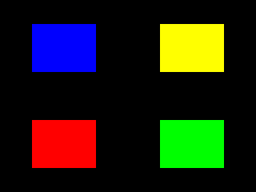
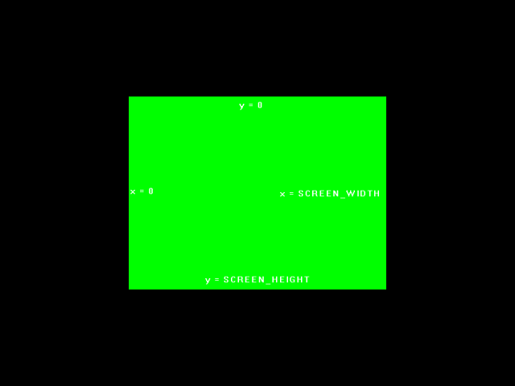
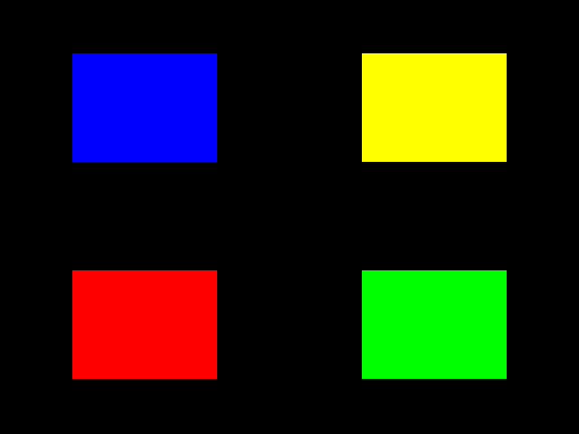

The Viewport

Last Updated 8/09/12
So we know how to define our coordinate system using the projection matrix, but what if we only want to render to part of the screen? This is where the viewport comes in.The viewport defines the rectangular area of the screen we want to render to. Here we'll be playing with it to do things like split screen rendering.
From LUtil.h
//Viewport mode
enum ViewPortMode
{
VIEWPORT_MODE_FULL,
VIEWPORT_MODE_HALF_CENTER,
VIEWPORT_MODE_HALF_TOP,
VIEWPORT_MODE_QUAD,
VIEWPORT_MODE_RADAR
};
Just so you're not confused when we get to the rendering code, we have some enumerated constants that define the different ways we're going to be using the viewport.
From LUtil.cpp
#include "LUtil.h"
//Viewport mode
int gViewportMode = VIEWPORT_MODE_FULL;
bool initGL()
{
//Set the viewport
glViewport( 0.f, 0.f, SCREEN_WIDTH, SCREEN_HEIGHT );
//Initialize Projection Matrix
glMatrixMode( GL_PROJECTION );
glLoadIdentity();
glOrtho( 0.0, SCREEN_WIDTH, SCREEN_HEIGHT, 0.0, 1.0, -1.0 );
//Initialize Modelview Matrix
glMatrixMode( GL_MODELVIEW );
glLoadIdentity();
//Initialize clear color
glClearColor( 0.f, 0.f, 0.f, 1.f );
//Check for error
GLenum error = glGetError();
if( error != GL_NO_ERROR )
{
printf( "Error initializing OpenGL! %s\n", gluErrorString( error ) );
return false;
}
return true;
}
Here's the top of our LUtil.cpp file. Near the top, we have global variable "gViewportMode", which defines how we're going to use the viewport.
Our initGL() function is pretty much the same as before, but now it has a call to glViewport() to initialize the viewport. glViewport() defines what part of the screen we want to render to by defining the x coordinate, y coordinate, width, and height of the rendering area. As you can see here, we're just telling it to render to the whole screen.
Our initGL() function is pretty much the same as before, but now it has a call to glViewport() to initialize the viewport. glViewport() defines what part of the screen we want to render to by defining the x coordinate, y coordinate, width, and height of the rendering area. As you can see here, we're just telling it to render to the whole screen.
From LUtil.cpp
void render()
{
//Clear color buffer
glClear( GL_COLOR_BUFFER_BIT );
//Reset modelview matrix
glLoadIdentity();
//Move to center of the screen
glTranslatef( SCREEN_WIDTH / 2.f, SCREEN_HEIGHT / 2.f, 0.f );
At the top of our rendering function, we clear the screen and reset the modelview matrix as usual. After that we translate to the center of the screen. For the rest of our
rendering notice how we make no other transformation to either the projection or modelview matrices.
From LUtil.cpp
//Full View
if( gViewportMode == VIEWPORT_MODE_FULL )
{
//Fill the screen
glViewport( 0.f, 0.f, SCREEN_WIDTH, SCREEN_HEIGHT );
//Red quad
glBegin( GL_QUADS );
glColor3f( 1.f, 0.f, 0.f );
glVertex2f( -SCREEN_WIDTH / 2.f, -SCREEN_HEIGHT / 2.f );
glVertex2f( SCREEN_WIDTH / 2.f, -SCREEN_HEIGHT / 2.f );
glVertex2f( SCREEN_WIDTH / 2.f, SCREEN_HEIGHT / 2.f );
glVertex2f( -SCREEN_WIDTH / 2.f, SCREEN_HEIGHT / 2.f );
glEnd();
}
In "VIEWPORT_MODE_FULL", we set the viewport to be the full screen and we render a full screen quad.
It may seem redundant to set the viewport again, but in this demo we're going to be changing up the viewport depending on "gViewportMode".
It may seem redundant to set the viewport again, but in this demo we're going to be changing up the viewport depending on "gViewportMode".
From LUtil.cpp
//View port at center of screen
else if( gViewportMode == VIEWPORT_MODE_HALF_CENTER )
{
//Center viewport
glViewport( SCREEN_WIDTH / 4.f, SCREEN_HEIGHT / 4.f, SCREEN_WIDTH / 2.f, SCREEN_HEIGHT / 2.f );
//Green quad
glBegin( GL_QUADS );
glColor3f( 0.f, 1.f, 0.f );
glVertex2f( -SCREEN_WIDTH / 2.f, -SCREEN_HEIGHT / 2.f );
glVertex2f( SCREEN_WIDTH / 2.f, -SCREEN_HEIGHT / 2.f );
glVertex2f( SCREEN_WIDTH / 2.f, SCREEN_HEIGHT / 2.f );
glVertex2f( -SCREEN_WIDTH / 2.f, SCREEN_HEIGHT / 2.f );
glEnd();
}
Here we render the same 640x480 quad in a viewport that's half the width/height of the screen in the middle of our rendering area. It results in this:
So the rendering coordinates are still 640x480 even if the viewport is 320x240.

Note: coordinate information added in
Note: coordinate information added in
So the rendering coordinates are still 640x480 even if the viewport is 320x240.
From LUtil.cpp
//Viewport centered at the top
else if( gViewportMode == VIEWPORT_MODE_HALF_TOP )
{
//Viewport at top
glViewport( SCREEN_WIDTH / 4.f, SCREEN_HEIGHT / 2.f, SCREEN_WIDTH / 2.f, SCREEN_HEIGHT / 2.f );
//Blue quad
glBegin( GL_QUADS );
glColor3f( 0.f, 0.f, 1.f );
glVertex2f( -SCREEN_WIDTH / 2.f, -SCREEN_HEIGHT / 2.f );
glVertex2f( SCREEN_WIDTH / 2.f, -SCREEN_HEIGHT / 2.f );
glVertex2f( SCREEN_WIDTH / 2.f, SCREEN_HEIGHT / 2.f );
glVertex2f( -SCREEN_WIDTH / 2.f, SCREEN_HEIGHT / 2.f );
glEnd();
}
Here's a 640x480 quad, render in a 320x240 viewport, render at viewport position x = 80, y = 240. On GLUT, it turns out like this:
An important thing to note is while our projection coordinates have Y+ as down and Y- as up, the viewport coordinates aren't guaranteed. On GLUT, Y+ is up and Y- is down for viewport coordinates. On some windowing systems, Y+ is down and Y- is up for viewport coordinates. So when working with different windowing systems, don't assume the viewport coordinates are the same.
An important thing to note is while our projection coordinates have Y+ as down and Y- as up, the viewport coordinates aren't guaranteed. On GLUT, Y+ is up and Y- is down for viewport coordinates. On some windowing systems, Y+ is down and Y- is up for viewport coordinates. So when working with different windowing systems, don't assume the viewport coordinates are the same.
From LUtil.cpp
//Four viewports
else if( gViewportMode == VIEWPORT_MODE_QUAD )
{
//Bottom left red quad
glViewport( 0.f, 0.f, SCREEN_WIDTH / 2.f, SCREEN_HEIGHT / 2.f );
glBegin( GL_QUADS );
glColor3f( 1.f, 0.f, 0.f );
glVertex2f( -SCREEN_WIDTH / 4.f, -SCREEN_HEIGHT / 4.f );
glVertex2f( SCREEN_WIDTH / 4.f, -SCREEN_HEIGHT / 4.f );
glVertex2f( SCREEN_WIDTH / 4.f, SCREEN_HEIGHT / 4.f );
glVertex2f( -SCREEN_WIDTH / 4.f, SCREEN_HEIGHT / 4.f );
glEnd();
//Bottom right green quad
glViewport( SCREEN_WIDTH / 2.f, 0.f, SCREEN_WIDTH / 2.f, SCREEN_HEIGHT / 2.f );
glBegin( GL_QUADS );
glColor3f( 0.f, 1.f, 0.f );
glVertex2f( -SCREEN_WIDTH / 4.f, -SCREEN_HEIGHT / 4.f );
glVertex2f( SCREEN_WIDTH / 4.f, -SCREEN_HEIGHT / 4.f );
glVertex2f( SCREEN_WIDTH / 4.f, SCREEN_HEIGHT / 4.f );
glVertex2f( -SCREEN_WIDTH / 4.f, SCREEN_HEIGHT / 4.f );
glEnd();
//Top left blue quad
glViewport( 0.f, SCREEN_HEIGHT / 2.f, SCREEN_WIDTH / 2.f, SCREEN_HEIGHT / 2.f );
glBegin( GL_QUADS );
glColor3f( 0.f, 0.f, 1.f );
glVertex2f( -SCREEN_WIDTH / 4.f, -SCREEN_HEIGHT / 4.f );
glVertex2f( SCREEN_WIDTH / 4.f, -SCREEN_HEIGHT / 4.f );
glVertex2f( SCREEN_WIDTH / 4.f, SCREEN_HEIGHT / 4.f );
glVertex2f( -SCREEN_WIDTH / 4.f, SCREEN_HEIGHT / 4.f );
glEnd();
//Top right yellow quad
glViewport( SCREEN_WIDTH / 2.f, SCREEN_HEIGHT / 2.f, SCREEN_WIDTH / 2.f, SCREEN_HEIGHT / 2.f );
glBegin( GL_QUADS );
glColor3f( 1.f, 1.f, 0.f );
glVertex2f( -SCREEN_WIDTH / 4.f, -SCREEN_HEIGHT / 4.f );
glVertex2f( SCREEN_WIDTH / 4.f, -SCREEN_HEIGHT / 4.f );
glVertex2f( SCREEN_WIDTH / 4.f, SCREEN_HEIGHT / 4.f );
glVertex2f( -SCREEN_WIDTH / 4.f, SCREEN_HEIGHT / 4.f );
glEnd();
}
Here we have multiple viewports, which is useful for splitscreen games and simulations. The same quad is rendered 4 times, just with different colors and viewport locations.

From LUtil.cpp
//Viewport with radar subview port
else if( gViewportMode == VIEWPORT_MODE_RADAR )
{
//Full size quad
glViewport( 0.f, 0.f, SCREEN_WIDTH, SCREEN_HEIGHT );
glBegin( GL_QUADS );
glColor3f( 1.f, 1.f, 1.f );
glVertex2f( -SCREEN_WIDTH / 8.f, -SCREEN_HEIGHT / 8.f );
glVertex2f( SCREEN_WIDTH / 8.f, -SCREEN_HEIGHT / 8.f );
glVertex2f( SCREEN_WIDTH / 8.f, SCREEN_HEIGHT / 8.f );
glVertex2f( -SCREEN_WIDTH / 8.f, SCREEN_HEIGHT / 8.f );
glColor3f( 0.f, 0.f, 0.f );
glVertex2f( -SCREEN_WIDTH / 16.f, -SCREEN_HEIGHT / 16.f );
glVertex2f( SCREEN_WIDTH / 16.f, -SCREEN_HEIGHT / 16.f );
glVertex2f( SCREEN_WIDTH / 16.f, SCREEN_HEIGHT / 16.f );
glVertex2f( -SCREEN_WIDTH / 16.f, SCREEN_HEIGHT / 16.f );
glEnd();
//Radar quad
glViewport( SCREEN_WIDTH / 2.f, SCREEN_HEIGHT / 2.f, SCREEN_WIDTH / 2.f, SCREEN_HEIGHT / 2.f );
glBegin( GL_QUADS );
glColor3f( 1.f, 1.f, 1.f );
glVertex2f( -SCREEN_WIDTH / 8.f, -SCREEN_HEIGHT / 8.f );
glVertex2f( SCREEN_WIDTH / 8.f, -SCREEN_HEIGHT / 8.f );
glVertex2f( SCREEN_WIDTH / 8.f, SCREEN_HEIGHT / 8.f );
glVertex2f( -SCREEN_WIDTH / 8.f, SCREEN_HEIGHT / 8.f );
glColor3f( 0.f, 0.f, 0.f );
glVertex2f( -SCREEN_WIDTH / 16.f, -SCREEN_HEIGHT / 16.f );
glVertex2f( SCREEN_WIDTH / 16.f, -SCREEN_HEIGHT / 16.f );
glVertex2f( SCREEN_WIDTH / 16.f, SCREEN_HEIGHT / 16.f );
glVertex2f( -SCREEN_WIDTH / 16.f, SCREEN_HEIGHT / 16.f );
glEnd();
}
//Update screen
glutSwapBuffers();
}
And for our last of the viewport demos, we render a full sized scene, and then render a smaller version on the top left corner.
Having a viewport inside of a viewport might be useful for things like rendering a radar on the screen.
Of course, at the end of our rendering function we update the screen.
Having a viewport inside of a viewport might be useful for things like rendering a radar on the screen.
Of course, at the end of our rendering function we update the screen.
From LUtil.cpp
void handleKeys( unsigned char key, int x, int y )
{
//If the user presses q
if( key == 'q' )
{
//Cycle through viewport modes
gViewportMode++;
if( gViewportMode > VIEWPORT_MODE_RADAR )
{
gViewportMode = VIEWPORT_MODE_FULL;
}
}
}
Lastly, here's our key handler. All it does is cycle through the viewport rendering modes when the user presses q.
We would go over our main() function, but as you'll see in the source code it's indentical to the previous tutorial.
We would go over our main() function, but as you'll see in the source code it's indentical to the previous tutorial.